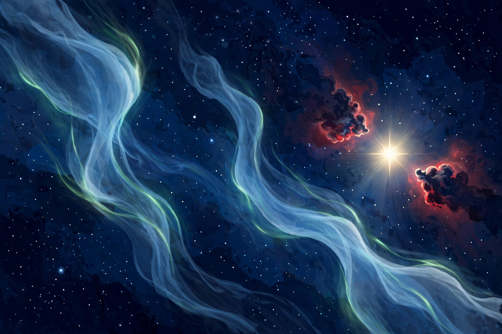

October 22, 2026
Three New Ghosts Found Haunting Cassiopeia

Illustration: The Discovery Wire (generated artwork for this story)
It took 100 hours of staring at one patch of sky to find three ghosts nobody knew were there.
NASA's Astronomy Picture of the Day for October 21, 2026, features a remarkable deep image of the constellation Cassiopeia — and buried in it are three faint structures, newly highlighted, that appear as blue phantoms drifting among the stars and clouds of gas.
The neighborhood was already famous. Two nebulae, IC 59 and IC 63 — the original "Ghosts of Cassiopeia" — haunt the region near the multi-star system Gamma Cassiopeiae. Energetic light from Gamma Cassiopeiae makes the hydrogen gas in these nebulae glow red, while their dust reflects and scatters some blue-ish white starlight.
The three newcomers — labeled Objects 1, 2, and 3 — only emerged through a special filter tuned to the light of ionized oxygen, after roughly 100 hours of total exposure by imagers Louis Leroux-Géré, Thibault Rouillée, Vincent Martin, and Cédric de Decker of Starfront Observatories. In that oxygen light they shine blue, revealing gas that ordinary images miss entirely.
And here is the part we love: nobody fully knows what they are yet. The leading guesses are evocative. Gamma Cassiopeiae may be piling up interstellar material as the system moves through gas and dust — like the bow wave at the front of a speeding boat — and Object 3 could be the compressed, heated oxygen of that bow shock. Object 1 might be a planetary nebula, if a central white dwarf is ever identified. But ionized by what, exactly? The origins of these apparitions remain, in APOD's words, "a mystery to be solved."
Even the familiar sky still has rooms nobody has opened. Sometimes all it takes is a hundred hours, the right filter, and someone willing to look.
Source: NASA's Astronomy Picture of the Day — read the original report
← Back to latest stories